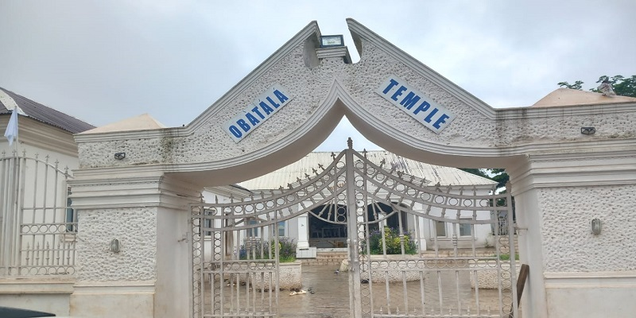

Yoruba religion

The Yorùbá religion (Yoruba: Ìṣẹ̀ṣe [ìʃɛ̀ʃē]), West African Orisa (Òrìṣà [òɾìʃà]), or Isese (Ìṣẹ̀ṣe), comprises the traditional religious and spiritual concepts and practice of the Yoruba people. Its homeland is in what is commonly known as Yorubaland (Yoruba: Ilẹ̀ Káàárọ̀-Oòjíire), comprising the majority of the states of Oyo, Ogun, Osun, Ondo, Ekiti, Kwara, Lagos and parts of Kogi in present-day Southwestern Nigeria; the Departments of Collines, Oueme, Plateau in Southern Benin; and the adjoining parts of Central Togo. It has become the largest indigenous African religion / belief system in the world with several million adherents worldwide.
Facts
- Classification: African
- Scripture: Odu Ifa
- Theology: Diffused monotheism
- Region: Worldwide
- Language: Yoruba
- Territory: Yorubaland
- Origin: 500 B.C.E, Ile-Ife, Central Yorubaland
- Number of followers: est. several millions
Term
The Yorùbá name for the Yorùbá indigenous religion is Ìṣẹ̀ṣẹ, which also refers to the traditions and rituals that encompass Yorùbá culture. The term comes from a contraction of the words Ìṣẹ̀ (Ishɛ), meaning "source/root origin", and ìṣe (Ishe), meaning "practice/tradition" coming together to mean "The original tradition"/"The tradition of antiquity" as many of the practices, beliefs, traditions, and observances of the Yorùbá originate from the religious worship of Olodumare and the veneration of the Òrìṣà.
Beliefs and scripture
According to Kola Abimbola, the Yorubas have evolved a robust cosmology.[6] Nigerian Professor for Traditional African religions, Jacob K. Olupona, summarizes that central for the Yorùbá religion, and which all beings possess, is known as "Aṣẹ", which is "the empowered word that must come to pass," the "life force" and "energy" that "regulates all movement and activity in the universe".[8][9][10] Every thought and action of each person or being in Ayé (the physical realm) interact with the Supreme force, all other living things, including the Earth itself, as well as with Ọrun (the otherworld), in which gods, spirits and ancestors exist.[11][9][10] The Yorùbá religion can be described as a form of diffused monotheism, with a Supreme but distant creator force, encompassing the whole universe.[10]
Reincarnation
The Yoruba believe in Atunwa, the possibility of reincarnation within the family. The names Babatunde (father returns), Yetunde (Mother returns), Babatunji (Father wakes once again) and Sotunde (The wise man returns) all offer vivid evidence of the Ifa concept of familial or lineal rebirth.[12] There is no simple guarantee that one's grandfather or great uncle will "come back" in the birth of a child, however.
Scripture
The Yorùbá scriptures are called the Odù Ifá, which is a collection of revealed oracular texts originally passed down through oral tradition among babalawos.[18] It is traditionally divided into 256 sections, or Odù, which are divided into verses. It is closely related to the divination system of the Yorùbá religion, Ifá. The verses contain proverbs, stories, and statements that cover every aspect of life. The Odù Ifá is the foundation of Yorùbá spiritual knowledge and has influenced spiritual communities in the Americas, such as Santeria. Ifá refers to the deity Ọ̀rúnmìlà, who is associated with wisdom, intellect, and divination.[18]